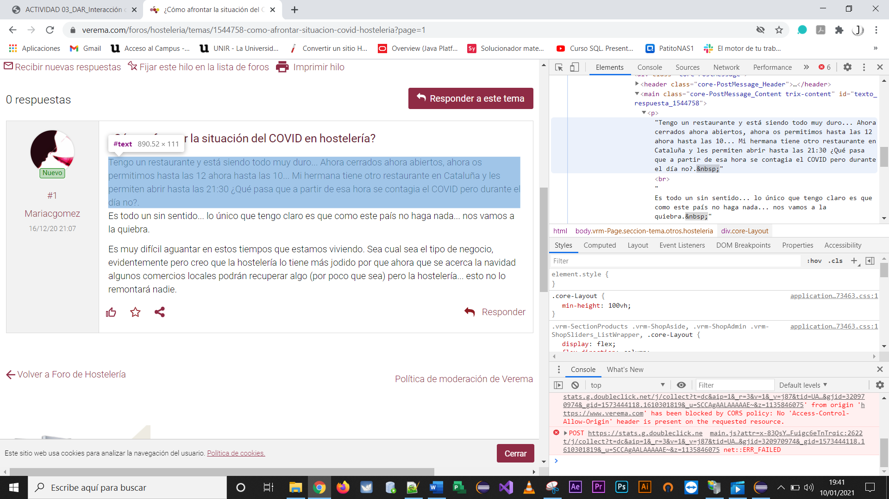
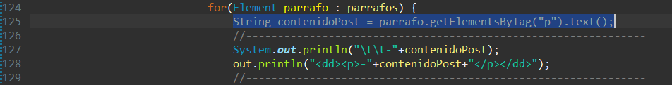
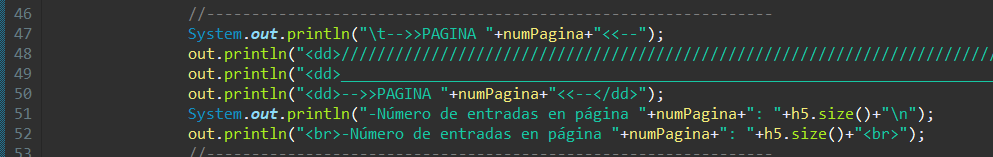
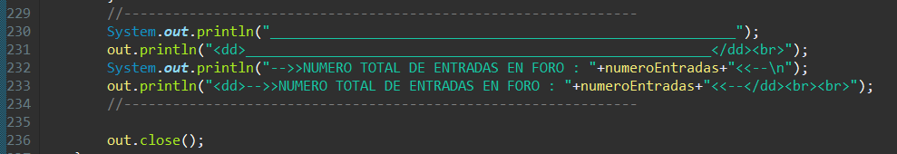

Una vez dentro de cada tema, se obtiene el contenido HTML nuevamente a través del enlace obtenido en la primera parte. Y así para cada tema.
De este documento HTML, necesitaremos obtener Título, número de respuestas al tema, y todo el contenido de cada hilo del post.

- Una primera parte selecciona el contenido para obtener el Título del tema, recogido en la etiqueta article.core-Thread.
- A continuación, necesitamos el número de respuestas, recogidas en la etiqueta core-Thread_Replies.
- Y, finalmente, un bucle for va extrayendo la información de cada hilo del post, recogiendo todo el contenido en el array de etiquetas div.foros_de_debate.
- Dentro del mismo, se obtendrá el número del Post (String numeroPost = numero01.getElementsByTag("a").text();), nombre del autor (String autorPost = autor01.getElementsByTag("span").text();), fecha (String fechaPost = elemento.getElementsByTag("time").text();) y contenido íntegro (String contenidoPost = parrafo.getElementsByTag("p").text();).
- Para los contenidos, se observa en el código HTML que vienen definidos por párrafos (etiquetas "p"), con lo cual se tiene que hacer una selección dentro de un contenido con etiquetas div.core-PostMessage, e ir obteniendo cada párrafo mediante un bucle for.


Durante el desarrollo de la implementación, utilicé el método de salida por consola System.out.println() para ir comprobando la información obtenida.
Pero para trasladar dicha información a un documento HTML, utilicé la clase PrintWriter para crear el objeto out, con el fin de que el programa vaya escribiendo toda la información en el documento HTML outScrapping.html a medida que se va desarrollando. De ahí que, el método out.println() de la clase PrintWriter, comparta espacio con System.out.println(), para que obtengan la misma información en la misma posición, tanto de la consola como del documento.


Capturas de la zona en la que los dos métodos comparten ubicación.
|